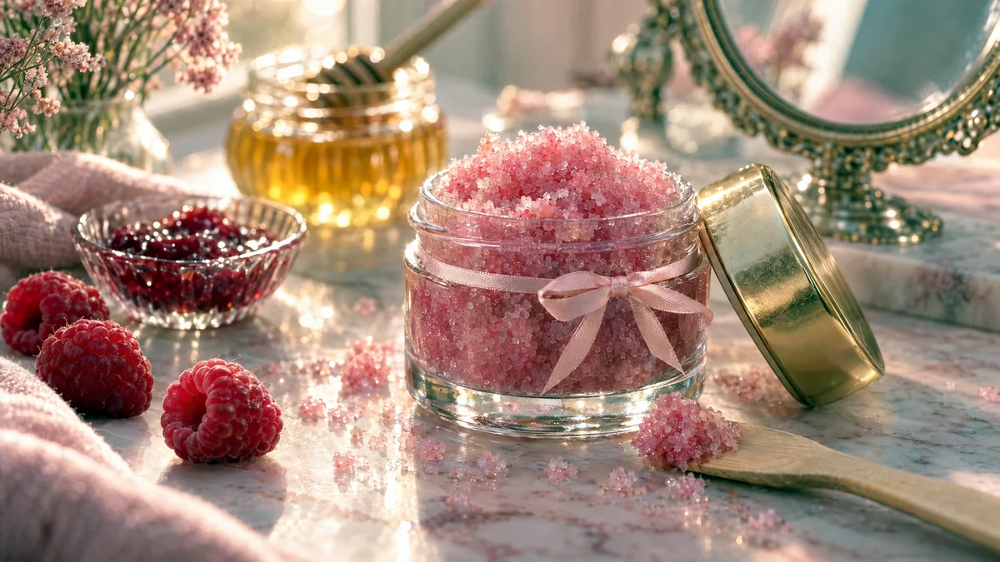

RESTFEST · HEMMASPA
Rosa läppskrubb med socker, honung och hallon
En sked socker, en skvätt honung och lite olja rörs ihop till en glittrande läppskrubb som gör läpparna mjuka och släta. En gnutta hallonsylt ger den en rosa färg och doftar sommar mitt i vintern. Fylld i en liten glasburk blir den en present som ser ut att komma från en dyr skönhetsbutik.
- Förberedelse
- 5 min
- Verkningstid
- 1 min
- Räcker till
- 5–6 behandlingar
- Nivå
- Nybörjare
 Det här behöver du
Det här behöver du
Tryck på + vid det du behöver köpa.
Vegansk variant
- Byt honungen mot ljus sirap.
Gör så här
- Rör ihop socker, honung, olja och vaniljsocker i en liten skål.
- Rör ner hallonsylten om du vill ha en rosa skrubb. Konsistensen ska vara som fuktig sand som håller ihop.
- Fyll skrubben i en liten, ren glasburk med lock.
- Använd skrubben på rena läppar. Ta en ärtstor mängd på fingertoppen och massera läpparna försiktigt med små cirkulära rörelser i 30–60 sekunder.
- Torka av med en fuktig tvättlapp, eller slicka bort det sista, den är ju gjord av mat.
- Avsluta med läppbalsam medan läpparna fortfarande är lite fuktiga.
Presentation och användning
- Fyll skrubben i en liten glasburk med guld- eller trälock, så att sockerkristallerna glittrar genom glaset.
- Knyt ett tunt sidenband runt burken och fäst en handskriven etikett.
- Ge bort den tillsammans med kaffeskrubben i behandling 34, som ett litet presentset.
- Använd skrubben en eller två gånger i veckan, oftare blir för hårt för den tunna huden.
Bra att veta
- Använd inte skrubben på spruckna eller såriga läppar, eller vid munsår.
- Använd inte skrubben om du är allergisk mot honung eller hallon.
- Förvara burken svalt. Utan sylt håller skrubben i ca 2 veckor, med sylt i ca 1 vecka i kylen.